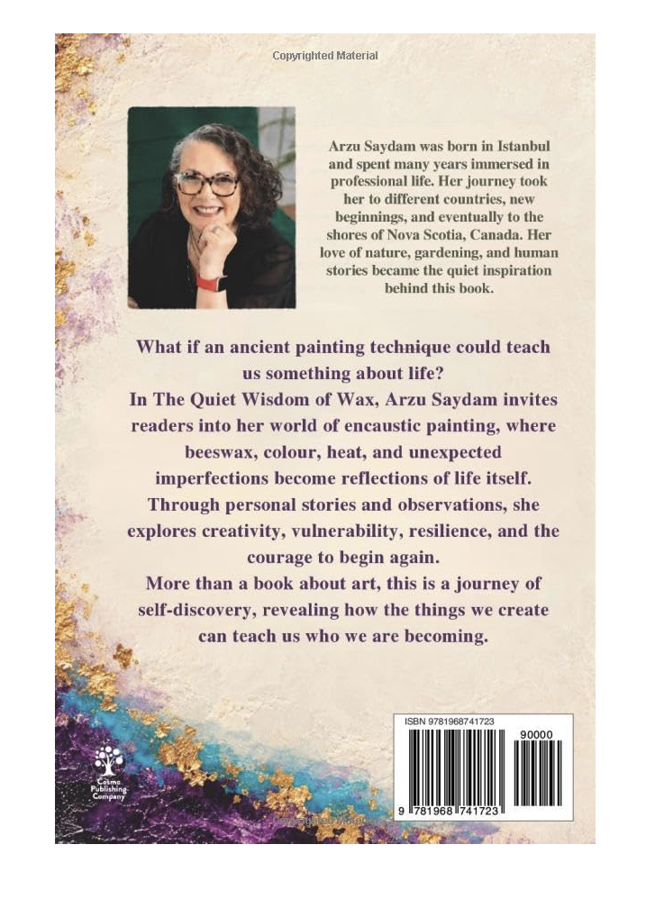

İngilizce baskıEnglish edition
The Quiet Wisdom of Wax
Reflections on Art, Creation, and the Inner Life of a Creator
Onun The Quiet Wisdom of Wax: Reflections on Art, Creation, and the Inner Life of a Creator adlı kitabı, resmini ve yazısını bir araya getirir; sanatsal ifade ile üreten kişinin iç dünyası arasındaki ilişki üzerine düşünür. Balmumu, pigmentler, ısı ve katmanlarla çalışırken, duyguları ve düşünceleri kelimelerin ötesinde keşfetmesine izin veren bir yaratım süreci buldu.Her book The Quiet Wisdom of Wax: Reflections on Art, Creation, and the Inner Life of a Creator brings her painting and writing together, reflecting on the relationship between artistic expression and the inner life of the person creating it. Working with beeswax, pigments, heat, and layers, she discovered a creative process that allowed her to explore emotions and ideas beyond words.
Arka kapakBack cover
